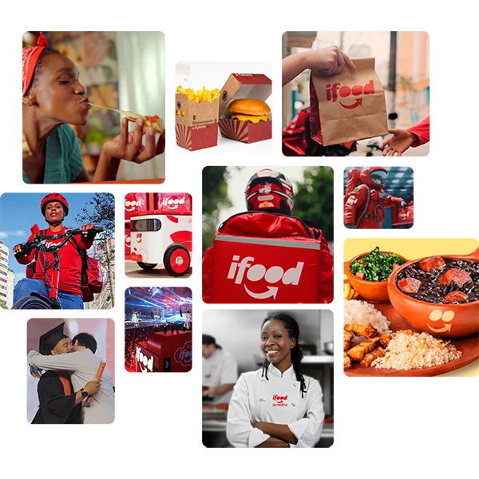
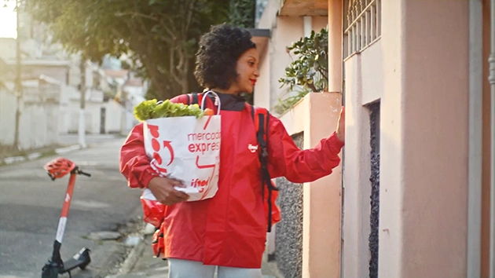
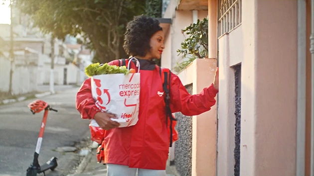

- Sobre nós
- Comunidade
- Sutentabilidade
- iFood News
- PT
- Pede iFood Já!
Comida é nossa paixão.Tecnologia, o nosso talento.
O iFood é uma empresa brasileira de tecnologia que aproxima clientes, restaurantes e entregadores de forma simples e prática. E,para proporcionar uma experiência incrível para todo mundo, nossa entrega vai muito além do delivery.
Saiba mais sobre o iFood

Estamos presentes nas rotinas brasileiras
O iFood é feito por pessoas que têm o mesmo propósito: alimentar o futuro do mundo. Do asfalto ao app, somos clientes, entregadores e empreendedores. Somos o pessoal da cozinha e a turma da tecnologia. Um ecossistema com 80 milhões de pedidos no app, que conecta mais de 250 mil entregadores e 350 mil estabelecimentos e movimenta 0,53% do PIB do país.
Conheça nossa comunidade
 

Geramos impacto social
e ambiental.
Estamos sempre em busca de conexões com pessoas e iniciativas que ajudam a construir um país mais próspero e justo para todos. Por isso, temos compromissos com o delivery sustentável, com a inclusão de mais brasileiros no mercado de tecnologia e com a educação que alimenta o futuro.
Conheça nossos compromissos